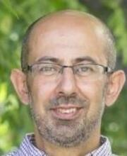
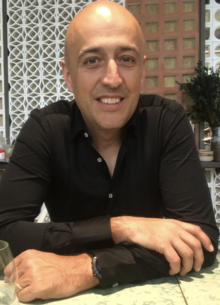
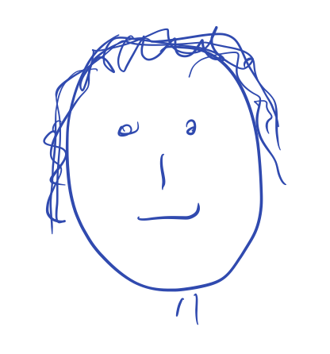

People
A shared curiosity.
A research community spanning machine learning, physics, astronomy and scientific computing.

Principal investigator
Pavlos Protopapas
Scientific Program Director and Lecturer
Harvard SEAS
Pavlos Protopapas is Scientific Program Director at Harvard’s Institute for Applied Computational Science (SEAS), where he has taught data science and AI since 2009. He designed and teaches CS1090A/B, Harvard’s core data science sequence (about 450 and 300 students), and created AC215, Productionizing Large Language Models . His HarvardX courses have reached more than 600,000 learners.
His research spans physics-informed neural networks and scientific ML, foundation models for astronomical time series (ASTROMER), and LLMs for science at NASA’s Astrophysics Data System. He is co-author of Solving Differential Equations and Inverse Problems with AI (World Scientific, 2026).
Research community archive
People behind the work.
These profiles preserve the lab’s earlier member, collaborator and alumni directory. They do not establish current appointments or student status.

Shuheng Liu
Research profile ↗
Vishnu M
Research profile ↗
Yuqing (Lily) Pan
Research profile ↗
Yash Surange
Research profile ↗
Sathvik Bhagavan

Ben Yuen

Hari Raval
Research profile ↗
Varshini Reddy
Research profile ↗
Cristobal Donoso

Augusto Chantada

Araz Sharma
Research profile ↗
Tao Tsui
Research profile ↗Lakshay Chawla
Research profile ↗Arya Mohan
Research profile ↗Ignacio Becker
Research profile ↗
Anshika Gupta
Research profile ↗Kshitij Parwani
Research profile ↗
Chris Gumb
David Loving

Raul Jimenez

Francisco Förster

Raphael Pellegrin
Research profile ↗Karim Pichara
Research profile ↗Susana Landau
Research profile ↗
Cecilia Garraffo
Research profile ↗
Guillermo Cabrera
Research profile ↗Spiros Mancoridis
Research profile ↗Haitz Ocariz
Research profile ↗
David Sondak
Research profile ↗
Marios Mattheakis
